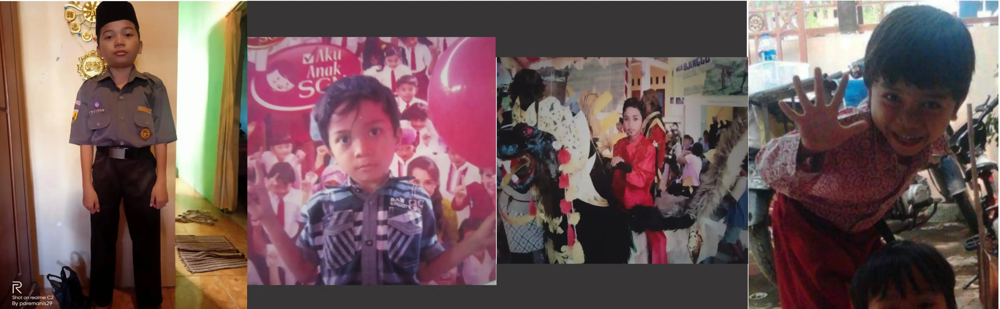

nouvalarr_rgh
Indramayu, Indonesia
Indramayu, Indonesia

nouvalarr_rgh
Berawal dari Indramayu, rasa penasaran saya terhadap dunia digital sudah muncul sejak kecil. Saya selalu tertarik bagaimana sebuah logika sederhana bisa membangun sesuatu yang besar. 👶✨
10 JANUARI 2004